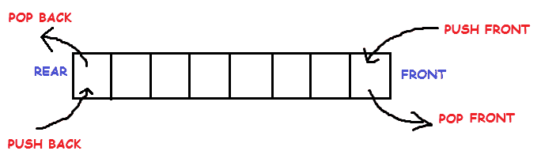
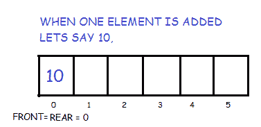
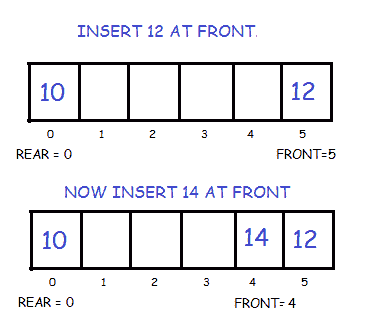
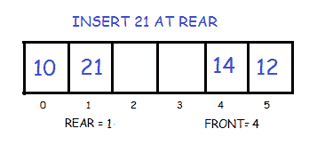
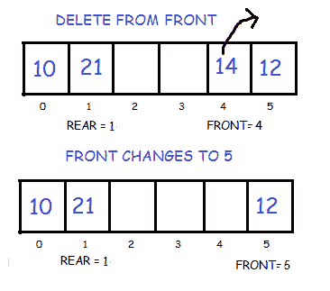
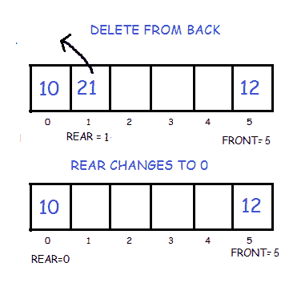

双端队列
原文：https://www.studytonight.com/data-structures/double-ended-queue
双端队列是一种更通用的队列数据结构形式，它允许从两端(即前端和后端)插入和移除元素。

双端队列的实现
这里我们将使用循环数组实现一个双端队列。它将有以下方法:
- 推回:在后面插入元素
- 向前推:在前面插入元素
- 弹回:移除最后一个元素
- pop_front : 移除第一个元素
- get_back : 返回最后一个元素
- get_front : 返回第一个元素
- 空:如果队列为空，则返回真
- 已满:如果队列已满，则返回真
// Maximum size of array or Dequeue
#define SIZE 5
class Dequeue
{
//front and rear to store the head and tail pointers
int *arr;
int front, rear;
public :
Dequeue()
{
//Create the array
arr = new int[SIZE];
//Initialize front and rear with -1
front = -1;
rear = -1;
}
// Operations on Deque
void push_front(int );
void push_back(int );
void pop_front();
void pop_back();
int get_front();
int get_back();
bool full();
bool empty();
};
在前面插入元素
首先，我们检查队列是否已满。如果没有满，我们按照给定的条件在前端插入一个元素:
- 如果队列是空的，那么将前面和后面初始化为 0。两者都指向第一个元素。

- 否则，我们减少前端并插入元素。因为我们使用的是圆形数组，所以我们必须记住，如果 front 等于 0，那么我们不是将它减 1，而是使它等于 SIZE-1。

void Dequeue :: push_front(int key)
{
if(full())
{
cout << "OVERFLOW\n";
}
else
{
//If queue is empty
if(front == -1)
front = rear = 0;
//If front points to the first position element
else if(front == 0)
front = SIZE-1;
else
--front;
arr[front] = key;
}
}
在后面插入元素
我们再次检查队列是否已满。如果它不是满的，我们按照给定的条件在后面插入一个元素:
- 如果队列是空的，那么将前面和后面初始化为 0。两者都指向第一个元素。
- 否则我们增加后部并插入元素。因为我们使用的是圆形数组，所以我们必须记住，如果 rear 等于 SIZE-1，那么我们将使它等于 0，而不是增加 1。

void Dequeue :: push_back(int key)
{
if(full())
{
cout << "OVERFLOW\n";
}
else
{
//If queue is empty
if(front == -1)
front = rear = 0;
//If rear points to the last element
else if(rear == SIZE-1)
rear = 0;
else
++rear;
arr[rear] = key;
}
}
删除第一个元素
为此，我们首先检查队列是否为空。如果不是，则按照给定的条件删除前面的元素:
- 如果只有一个元素存在，我们再一次使前后等于-1。
- 否则我们增加战线。但是我们必须记住，如果 front 等于 SIZE-1，那么我们不是将它增加 1，而是使它等于 0。

void Dequeue :: pop_front()
{
if(empty())
{
cout << "UNDERFLOW\n";
}
else
{
//If only one element is present
if(front == rear)
front = rear = -1;
//If front points to the last element
else if(front == SIZE-1)
front = 0;
else
++front;
}
}
删除最后一个元素
为了做到这一点，我们再次首先检查队列是否为空。如果不是，那么我们按照给定的条件删除最后一个元素:
- 如果只有一个元素存在，我们就使前后等于-1。
- 否则我们减少后方。但是我们必须记住，如果后方等于 0，那么我们不是将其减少 1，而是使其等于大小-1。

void Dequeue :: pop_back()
{
if(empty())
{
cout << "UNDERFLOW\n";
}
else
{
//If only one element is present
if(front == rear)
front = rear = -1;
//If rear points to the first position element
else if(rear == 0)
rear = SIZE-1;
else
--rear;
}
}
检查队列是否为空
它可以简单地通过查看前面指向的位置来检查。如果 front 仍以-1 开头，则队列为空。
bool Dequeue :: empty()
{
if(front == -1)
return true;
else
return false;
}
检查队列是否已满
因为我们使用的是循环数组，所以我们检查以下条件，如代码所示，以检查队列是否已满。
bool Dequeue :: full()
{
if((front == 0 && rear == SIZE-1) ||
(front == rear + 1))
return true;
else
return false;
}
返回第一个元素
如果队列不是空的，那么我们只需返回存储在前面指向的位置的值。
int Dequeue :: get_front()
{
if(empty())
{ cout << "f=" <<front << endl;
cout << "UNDERFLOW\n";
return -1;
}
else
{
return arr[front];
}
}
返回最后一个元素
如果队列不是空的，那么我们只需返回存储在后点位置的值。
int Dequeue :: get_back()
{
if(empty())
{
cout << "UNDERFLOW\n";
return -1;
}
else
{
return arr[rear];
}
}